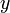

De: La Frikipedia, la enciclopedia extremadamente seria.
De: La Frikipedia, la enciclopedia extremadamente seria. De: La Frikipedia, la enciclopedia extremadamente seria.
xxx-CustomTitleStart-xxxEstrella Jalisiaxxx-CustomTitleEnd-xxx
| De la serie Elementos químicos: | ||
|
| ||
| Nombre oficial: | Estrella Galicia | |
| Otros nombres: | Estrella, Caña, Néctar de los dioses, CERVEZA | |
| Serie alquímica: | Afrodígenos | |
| Descubridor: | Uno en Galicia | |
| Color en tabla: | Oro claro | |
| Presente en: | Los sueños eróticos de cualquier borrachuzo que se precie | |
| Usos: | Principal entretenimiento antes de la existencia de entretenimientos y acompañante preferido de cualquier comida | |
| Estado: | Delicioso | |
| Peso kg/puñao: | Está castigado bajo pena de depilación de pantorrilla con celofán de los chinos a quien malgaste esta bebida para pesarla | |
| Estructura: | Está castigado bajo pena de depilación de pantorrilla con celofán de los chinos a quien malgaste esta bebida para analizar su estructura | |
| Abstracción: | No se sabe bien, pero quien la bebe se abstrae bastante | |
| Humungoso: | No, un poco más al Norte | |
«Si pones agua en una taza se convierte en la taza. Si pones agua en una botella se convierte en la botella. Si la pones en una tetera se convierte en la tetera. El agua puede fluir o puede chocar, la Estrella, por el contrario, puede hacer muchas más cosas.»
~ Bruce Lee filosofando sobre la supremacía de la Estrella Galicia
«-¿Entre 0 y Charlie Sheen cuanta es tu adicción?
-Massiel»
~ Consumidores tipo manteniendo una conversación habitual.
«Sin tele y sin cerveza Homer pierde la cabeza»
~ Homer Simpson manifestándose para que Estrella Galicia substituya a Duff en Springfield.
«Bomito, bebo una cruzcampo y bomito»
~ El reno renardo cantando una canción patrocinada por Estrella Galicia.
«-Una cruzcampo.
-Una Budweiser.
-Un zumo de naranja... ¿Qué pasa?? Si vosotros no vais a beber cerveza no os voy a hacer un feo.»
~ Consumidores tipo respetando a escorias gente que no bebe Estrella.
Estrella Jalisia es un brebaje mágico de los lares gallegos, elaborado con distintas substancias naturales y autóctonas como la cebada, el agua o el bambú.
En 1906, Miguel Primo de Rivera se fue a visitar a Ferrol a su amigo el capitán de la Armada y coronel de las fuerzas aéreas Salgado-Araujo[1]. Tras una breve visita de un par de días, la víspera de la vuelta de Primo montaron una fiesta.
Arrasaron con el alcohol de la zona en cosa de media hora y, en consecuencia tuvieron que fabricas su propia bebida alcohólica. Tras media hora de recolecta de ingredientes por separado, se reunieron en un cobertizo abandonado al sur de Ferrol e iniciaron un acto infernal. Sobre una base de agua de Sousas[2] echaron cebada, licor de herbas, queroseno, ortigas (de Ortigueira, ¿de dónde sino? Hombre, los gallegos son de producto nacional a muerte) y bambú.
Una vez acabada, quedaba darle el visto bueno, así que los dos brindaron por los hijos de Primo (por aquel entonces se conoce que había estado jugueteando con una tal Jessi sobrina-nieta de su padre).
El resultado del experimento fue apoteósico, sorprendente, inmejorable y maléfico. Tras una noche loca, de estas que Charlie Sheen llama una cena formal, se les apareció Satanás vociferando en latín y señalando con su hipermusculado índice a Primo de Rivera.
A finales de ese mismo año, Miguelito abrió una fábrica en unos terrenos que sus padres le dejaron en A Coruña. La empresa en un inicio se llamó UNA cerveza GRANDE Y LIBRE.
Pero sobre 1920 (mierda, nunca me acuerdo de la fecha, normal que sacase un 0 en Historia) Primo se tuvo que ausentar de la fábrica por motivos mucho más importantes y dejó al cargo a su hijo mayor José.
En realidad no es el mayor, sino que es el 45º, lo que pasa es que los anteriores 44 no se reconocen como hijos propiamente dichos porque fueron abortados.
Para que nos entendamos, Primo tuvo 6 hijos, de los cuales 4 son chicos, uno es un Power Ranger y el resto chicas. A su vez, abortó a 44. De esos, 25 fueron con María Castaña (3 de estos fueron abortados a los 2 años), 10 con mujeres congoleñas durante su etapa militar, 7 con la puta del barrio, 2 con su madre y el resto con su mujer. Y no reconocidos tuvo con unas 52 mujeres congoleñas, de las cuales 8 superan los 14 hijos, 43 con una media de 9,10,11 hijos la última (su hija) con un único hijo sumando un total de 616 hijos no reconocidos de mujeres congoleñas.
La Estrella Galicia es el primer producto que esta empresa empezó a fabricar y el que más fama le ha dado a la marca.
Su agradable sabor la hace la mejor cerveza del mundo (bueno, en realidad no es por eso, es porque el resto son bazofia puta mierda.)
Se caracteriza por ser una cerveza altamente nutritiva y con una cantidad de alcohol que si llamamos h, entonces ≤ , siendo .
El arraigo de este producto en la tierra gallega es algo indescriptible con palabras, solamente el sabor (el toque que le da el queroseno) puede explicar como esta maravilla puede tener tanto éxito en Galicia.
En los inicios de la empresa, la estrella se distribuía por toda España y poco después se expandió al mundo entero, pero hoy en día el consumo mundial ha decaído que se jodan mientras que la producción sigue aumentando debido a la demanda que se tiene de este producto que cada día crece exponencialmente. Esto se debe a dos motivos:
Los dueños de Estrella Galicia se han dejado el 50% de las ganancias que esta bebida les ha dado los 69 primeros años para contratar a los mejores publicistas que salieron de la facultad de Oxford y Harvard. Este grupo de publicistas, creadores de perlas como: [1] [2] [3] [4] [5]
Liderado por Loulogio este grupo siempre buscó anunciar el producto resaltando siempre la elegancia de esta noble bebida así como su excelente calidad propia de las cenas de alto copete del puto follador Berlusconi El Cabaliere. Ah, que su nombre si que es Berlusconi, me la suda tanto que le podría vender el sudor al pavo este como lubricante y lo gastaría todo en dos días pensaba que era juego de palabras con "Ver las conas".
Otro recurso muy utilizado por los anunciantes la exaltación del pueblo gallego, el orgullo de sentirse gallegos y tener la mejor cerveza del mundo. Este recurso empezó a ser mucho más utilizado cuando los dioses empezaron a dejar sin estrellas al resto de planeta, así, pa joder (lo que comúnmente se llama Retranca Gallega.) El culmen de los anuncios de la Estrella Galicia, mezcla estas dos “técnicas” y es la serie de anuncios protagonizados por Pilar Rubio.
Jodidos Cracks.
Incomprensiblemente existe un número exorbitante de gente que no la ha bebido y que forman parte de un club social con muy poco prestigio que se reúne todos los años, bisiestos incluidos, todos los días del año, si fin de año también, 24h diarias en un local de mala muerte llamado Infierno. Un ejemplo que ha conmovido a gran parte del planeta tierra por la perdida del grupo Mägo de Oz:
«Alza tu cerveza... brinda por la libertad, bebe y vente de fiesta, pues el infierno es este bar!»
~ Mägo de Oz declarandose miembros honoríficos de este club social
La mejor forma de disfrutar de una estrella, sólo, con una chavala o con los colegas es acompañándola con:
Sea una curva plana dada por: ,
que no es cerrada en un intervalo .
Y  un vaso o jarra de Estrella bien fresquita.
un vaso o jarra de Estrella bien fresquita.
Considerando L los litros que caben en el vaso y la distancia variable entre la barra y el bebedor
En el caso de que esté orientada de tal forma que una persona situada encima a las 00:00 siguiendo su recorrido no mire el sol entonces se cumple que:
La interpretación geométrica viene a decir que a cuanta más cantidad de estrella y mayor lejanía de la barra, un hombre a partir de las 00:00 recorre una línea curva abierta perfectamente descriptible matemáticamente comiéndose una cantidad de objetos igual al resultado de la integral.
La Estrella Galicia ha sido investigada por científicos del ejercito de Huesca con anonadantes resultados que demuestran que el universo, un kilómetro alrededor de una persona bajo los efectos de una Estrella Galicia o derivadas (excepto la Shandy), no obedece las leyes de la física clásica y es por eso que se han desarrollado estas nuevas:
Todas esa teorías mayas sobre la predicción del fin del mundo no son más que un claro ejemplo de las gilipolleces, sandeces, desfachateces y demás heces en general que el ser humano es capaz de producir bajo los efectos de una birra vulgar y corriente que no sea una Estrella.
A pesar de esto, los jodíos han tenido suerte y el fin del mundo si que será el 21 de diciembre de 2012.
Todo se remonta a principios de 2009, cuando en escasos días surgieron dos noticias: "Estrella Galicia aparecería como patrocinador en las camisetas del Celta de Vigo y Deportivo de la Coruña".
Aparentemente supone una representación los estandares de calidad más altos conseguidos por los gallegos, pero si bien la estrella galicia es adorada por los gallegos, el Dépor es odiado por portugueses vigueses y el Celta por turcos, con lo que, el logo de la Estrella en la camiseta se convirtió en una competición.
Al principio la batalla casi ni existía, el Dépor en primera y el Celta en segunda.
Pero un día los coruñeses bajaron a segunda división, terreno rival con lo que eso supone, enfrentamiento directo. El primer encuentro entre los dos equipos en Riazor fue una clara batalla liderada por el Celta, pero que el Deportvi logró ganar milagrosamente.
La segunda batalla campal fue un calco de la primera, con más acción, polémica, muertos y humor, pero el Celta volvió a perder.
El Celta, después del gran despliegue y dominió, se sintió hundido, igual que Homer Simpson hundiéndose en la nieve mientras mira la televisión portátil, pero cuando esta se apaga, sus ganas de matar aumentan. Es por eso que su próximo encuentro será bestial, el partido del siglo, se podría decir, puesto que será en Primera División, el 21 de diciembre de 2012.
Además, aún no está confirmado, pero se rumorea que el contrato de publicidad con Estrella será renovado incluyendo nuevas aportaciones que el día del derbi aumentaran el espectáculo antes de la hecatombe final.

|
Era una noche cálida, a pesar del invierno. El silencio y la oscuridad eran absolutos.
El vacío total. No había nadie. Nadie más.
Eran ya las 2 de la madrugada y seguían vagando por aquel intempestivo lugar apartado de la mano de Dios.
La marcha impasiva, la compenetración, el ritmo, el paso al unísono hacía de ellos unos fantasmas en medio de la nada. Invisibles, mudos, ágiles pero tranquilos.
El camino hacia ningún lado en concreto era largo, pero la borrachera que llevaban aún no se les había pasado.
La brisa del viento levanta la arena, pero la marcha prosigue.
La Luna hoy no está de humor y relega su labor en dos solitarios puntos de luz que fingen ser estrellas reducidas a la escala de los gnomos de los cuentos que le leían a Leo Messi.
De pronto, todo ocurre. Uno se para. Alza la cabeza.
Sus amigos no se dan cuenta, siguen su andanza acompañados por el leve ruido de sus pasos que, repentinamente es interrumpido por un grito: "¡¡Ey!!. ¡¡Chicos, mirad!!"
Se detienen.
"Mirad esa luz en el cielo."
"Sólo es una estrella, Baltasar."
"No te precipites, Gaspar. Tiene algo que no es común. Somos estudiantes de Astrología, quizás deberíamos estudiarla."
"Melchor, ¿no te cansas de estudiar? ¿Por qué crees que le das tanto asco a los compañeros?"
"¡Qué infantil! No te das cuenta, podríamos hacer un gran descubrimiento y grabar nuestros nombres en la historia por realizar una proeza de vital importancia en las vidas futuras y ser reconocidos por que aportaremos algo a la humanidad. ¡Cambiaremos la forma de vivir! ¡De pensar!"
"Bueno, ni que fueras tan trompa como Baltasar."
"¡Que te tengo dicho mil veces que no voy borracho! Por cierto, la nave espacial se escapa."
"¡Ostia!, la estrella, seguidla. Si no, nunca nos haremos famosos y tendremos que abandonar España para conseguir trabajo."
"No empieces con eso de dejar España, que mira que hacerte caso para venirnos de Erasmus a Jerusalen. ¡Manda narices!"
Los pobres muchachos corrieron por el desierto siguiendo la senda que una luz brillante marcaba en el cielo a través de la noche. Corrían velozmente, dejando atrás sus enseres, lastres en mitad de la carrera.
Pasados varios minutos, la luz se difuminó hasta desvanecerse y los muchachos se pararon y empezaron a discutir entre ellos.
Baltasar vomitaba, mientras Gaspar tiraba al suelo a Melchor comenzando un duelo de titanes.
Forcejearon en el suelo, rodando por una leve pendiente y a lo lejos, observaron un pequeño resplandor que asomaba tras la silueta de lo que parecía un árbol.
Se acercaron y encontraron un extraño objeto de que iluminaba como un fluorescente recién comprado.
El objeto se hallaba rodeado por un aura especial, como un campo magnético, ponía los pelos como escarpias a quienes lo rodeaban, escalofríos sentían, y apaciguaba su ira, relajándolos y acelerando la producción de endorfinas.
"Joder, chicos. Dejad de pelear. Aquí hay una cabaña"
Melchos y Gaspar se acercaron a Baltasar con el extraño objeto entre las manos y se dirigieron al interior de la cabaña.
Un interior húmedo y oscuro. Frío.
Se escuchaban ruidos, que guiaron a los estudiantes, mientras el extraño objeto iluminaba lo justo para no tropezar con ningún objeto.
Se encontraron con una mujer que tenía un recién nacido en brazos. Este saltó instánenemente al suelo se acercó, cogió el objeto, lo abrió y se bebió el interior, para concluir con unas palabras:
"Muy agradecido me hallo por este presente tan generoso, este oro líquido." Mientras miraba a Melchor.
"Terroso, vivaz, carnal y profundamente cautivador con un aroma mágico, y propiamente de celebraciones espirituales." Mirando a Gaspar.
"Y con, eh, y... si, esto, mirra, ¡un elefante rosa volando!!"
Dicho esto regresó al regazo de su madre, caminando sobre |

|
| Bibliografía de 4 apostadores |
Este escrito es el primero que se ha hallado relatando la leyenda que durante bastantes años se había transmitido oralmente de generación en generación hasta que un par de estudiantes de filología hicieron una recopilación de leyendas mundiales.
Muchos entendidos en materia cultural de nuestros antepasados, convecinos de los Australopithecus dudan de la autenticidad de dicha leyenda, defendiendo que tiene un final edulcorado con malévolas intenciones. [3] [4]
Su argumento es que existe una versión que ha llegado oralmente a nuestros días que dice que esos tres estudiantes siguieron la luz hasta llegar a un manzano en el que Isaac Newton se encontraba inconsciente, con una brecha en la cabeza y una Estrella Galicia relumbrando a su lado.
Cuando el hombre recuperó la cordura escribió la Ley de la Gravitación Universal.
Este final, mucho más creíble que el anterior dio pie al nacimiento de la religión suprema, única verdadera y completamente placentera, tanto en vida como en el paraíso.

|
Galiza |
|---|---|
| Xeografía | |
| A Coruña | A Laracha | Carballo | Cariño | Cedeira | Ferrol | Fisterra | Monte do Gato | Santa Comba | Santiago de Compostela A Gudiña | Allariz | Arnoia | Bande | Beade | Carballiño | Celanova | Lobios | Louredo | Maside | O Pereiro de Aguiar | Ourense | Ribadavia | Verín | Xinzo de Limia | |
| Personalidades | |
| Políticos
Outros
| |
| Outros | |
| Galicia Bilingüe | Heredeiros da Crus | Koruño | La Coz de Galicia | Luar | Manual del gallego perfecto | Ourensanos | Peinador | Prestige | Suevos | Vigués | Xunta de Galicia
Empresas
Caixanova | Compañía de Tranvías da Coruña | Escuela Jedi de Negocios Caixanova | Estrella Galicia | La Pasiva | Vitrasa |
| | ||
|
Autor(es):